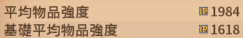
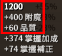
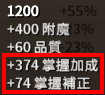
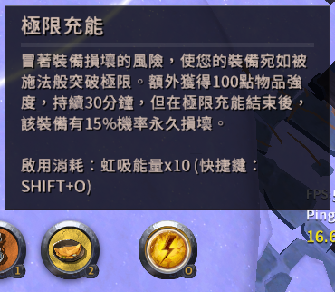
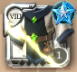
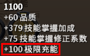
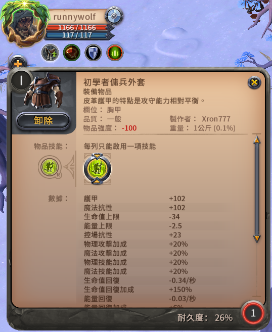

物品強度(ip)
物品強度(ip, Item Power)決定了物品的部分數值。例如：
- 武器的ip越高，傷害越高，暈人會更久。(大部分技能)
- 頭盔、護甲、鞋子的ip越高，血量跟傷害抗性會越高。
單一物品的ip為: 基礎物品強度 + 技能掌握加成
平均物品強度
平均物品強度為身上6格裝備的ip取平均。(雙手武器會以兩格計算)
基礎平均物品強度計算方法同上，但會忽略掉天賦羅盤的ip加成，即無練度的情況下穿同樣裝備的ip。
基礎物品強度
即使你該物品沒有任何練度，仍然會有基礎物品強度。
技能掌握加成
掌握加成取決於該物品天賦羅盤上的外圈和內圈等級。T3或T3以下的物品，技能掌握加成為0。
掌握補正根據物品的階級會有不同的加成。(=掌握加成ip*掌握補正倍率)
| 物品階級 | 掌握補正倍率 |
| T4 | 0% |
| T5 | 5% |
| T6 | 10% |
| T7 | 15% |
| T8 | 20% |
極限充能
消耗10個虹吸能量，讓你正在裝備的頭盔、護甲、鞋子、武器、副手，ip+100。等階T3或T3以下的裝備無法極限充能。

警告新手別開這東西，極限充能30分鐘後或是解除裝備有15%的機率變廢品。
極限充能後，裝備圖示會閃亮亮的，如下圖。


裝備耐久對於ip的影響
| 圖示 | 耐久度 | 影響 |
 |
30% ≦ 耐久度 ＜ 50% | 物品強度-100 |
 |
10% ≦ 耐久度 ＜ 30% | 物品強度-200 |
 |
1% ≦ 耐久度 ＜ 10% |
物品強度-200 且該裝備穿在身上不會有任何效果(視同沒穿) |
※ip可以扣到負的，如下圖。

計算
單個物品ip計算：
| +0% |
極限充能
|
||||||
| 100 | +0 | +0 | +0 | +0 | +0 | +0 | = 100 ip |
掌握加成的理論最高ip：
頭盔、護甲、鞋子為404(不包含採集裝)
武器及副手為380
編輯紀錄
作者: runnywolf
最後編輯日期: 2023/2/8